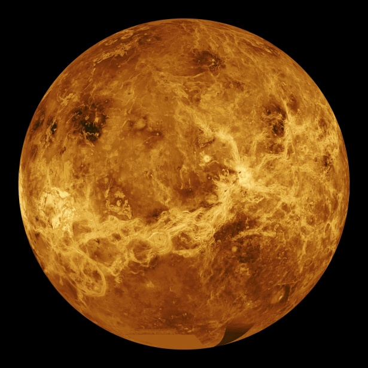

Venus
|  |
|
Venus es el objeto más brillante que se puede ver en el firmamento desde la Tierra. Parte de la intensidad del brillo de Venus es debido a la cercanía con la Tierra, ya que se trata del planeta que más próximo se encuentra de nosotros. Se trata de otro de los 4 planetas rocosos del sistema solar y debido a la gran similitud tanto en tamaño como en densidad con nuestro planeta, en ocasiones es denominado como el planeta gemelo de la Tierra. La atmósfera de Venus es tan densa que desde su superficie el Sol se vería como un tenue destello de luz. Al igual que la Tierra, Venus posee un núcleo de hierro envuelto por un manto de roca caliente y una corteza rocosa. |

|